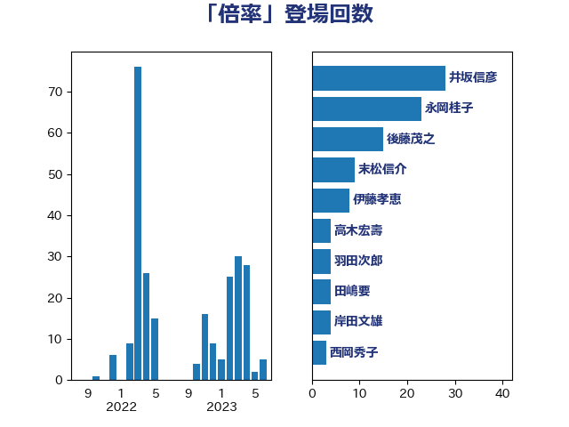

単語「倍率」

| 井坂信彦 | 立憲民主党 | 28 回 |
| 永岡桂子 | 自由民主党 | 23 回 |
| 後藤茂之 | 自由民主党 | 15 回 |
| 末松信介 | 自由民主党 | 9 回 |
| 伊藤孝恵 | 国民民主党 | 8 回 |
| 高木宏壽 | 自由民主党 | 4 回 |
| 羽田次郎 | 立憲民主党 | 4 回 |
| 田嶋要 | 立憲民主党 | 4 回 |
| 岸田文雄 | 自由民主党 | 4 回 |
| 西岡秀子 | 国民民主党 | 3 回 |
| 篠原豪 | 立憲民主党 | 3 回 |
| 片山大介 | 日本維新の会 | 3 回 |
| 浜口誠 | 国民民主党 | 3 回 |
| 櫻井周 | 立憲民主党 | 3 回 |
| 梅村聡 | 日本維新の会 | 3 回 |
| 斎藤嘉隆 | 立憲民主党 | 3 回 |
| 保岡宏武 | 自由民主党 | 3 回 |
| 井野俊郎 | 自由民主党 | 3 回 |
| 階猛 | 立憲民主党 | 2 回 |
| 近藤和也 | 立憲民主党 | 2 回 |
| 西村康稔 | 自由民主党 | 2 回 |
| 舩後靖彦 | れいわ新選組 | 2 回 |
| 田村智子 | 日本共産党 | 2 回 |
| 森本真治 | 立憲民主党 | 2 回 |
| 末次精一 | 立憲民主党 | 2 回 |
| 斉藤鉄夫 | 公明党 | 2 回 |
| 岩谷良平 | 日本維新の会 | 2 回 |
| 山崎正恭 | 公明党 | 2 回 |
| 小森卓郎 | 自由民主党 | 2 回 |
| 小林茂樹 | 自由民主党 | 2 回 |
| 吉川元 | 立憲民主党 | 2 回 |
| 倉林明子 | 日本共産党 | 2 回 |
| 高橋千鶴子 | 日本共産党 | 1 回 |
| 高市早苗 | 自由民主党 | 1 回 |
| 馬場雄基 | 立憲民主党 | 1 回 |
| 青柳陽一郎 | 立憲民主党 | 1 回 |
| 野田佳彦 | 立憲民主党 | 1 回 |
| 赤羽一嘉 | 公明党 | 1 回 |
| 谷田川元 | 立憲民主党 | 1 回 |
| 西銘恒三郎 | 自由民主党 | 1 回 |
| 藤木眞也 | 自由民主党 | 1 回 |
| 藤丸敏 | 自由民主党 | 1 回 |
| 若松謙維 | 公明党 | 1 回 |
| 米山隆一 | 立憲民主党 | 1 回 |
| 盛山正仁 | 自由民主党 | 1 回 |
| 牧義夫 | 立憲民主党 | 1 回 |
| 漆間譲司 | 日本維新の会 | 1 回 |
| 浜地雅一 | 公明党 | 1 回 |
| 浅川義治 | 日本維新の会 | 1 回 |
| 河野太郎 | 自由民主党 | 1 回 |
| 武部新 | 自由民主党 | 1 回 |
| 森屋隆 | 立憲民主党 | 1 回 |
| 梅村みずほ | 日本維新の会 | 1 回 |
| 柳ヶ瀬裕文 | 日本維新の会 | 1 回 |
| 柚木道義 | 立憲民主党 | 1 回 |
| 松原仁 | 立憲民主党 | 1 回 |
| 本村伸子 | 日本共産党 | 1 回 |
| 日下正喜 | 公明党 | 1 回 |
| 斎藤アレックス | 国民民主党 | 1 回 |
| 川田龍平 | 立憲民主党 | 1 回 |
| 島尻安伊子 | 自由民主党 | 1 回 |
| 岬麻紀 | 日本維新の会 | 1 回 |
| 山本佐知子 | 自由民主党 | 1 回 |
| 山口壯 | 自由民主党 | 1 回 |
| 小野泰輔 | 日本維新の会 | 1 回 |
| 宮本徹 | 日本共産党 | 1 回 |
| 宮崎勝 | 公明党 | 1 回 |
| 城井崇 | 立憲民主党 | 1 回 |
| 和田義明 | 自由民主党 | 1 回 |
| 吉田とも代 | 日本維新の会 | 1 回 |
| 古賀千景 | 立憲民主党 | 1 回 |
| 勝部賢志 | 立憲民主党 | 1 回 |
| 加藤勝信 | 自由民主党 | 1 回 |
| 佐藤英道 | 公明党 | 1 回 |
| 佐藤正久 | 自由民主党 | 1 回 |
| 伊佐進一 | 公明党 | 1 回 |
| 中野洋昌 | 公明党 | 1 回 |
| 世耕弘成 | 自由民主党 | 1 回 |
| 下野六太 | 公明党 | 1 回 |
| 上田清司 | 国民民主党 | 1 回 |
| 三浦信祐 | 公明党 | 1 回 |
| 一谷勇一郎 | 日本維新の会 | 1 回 |